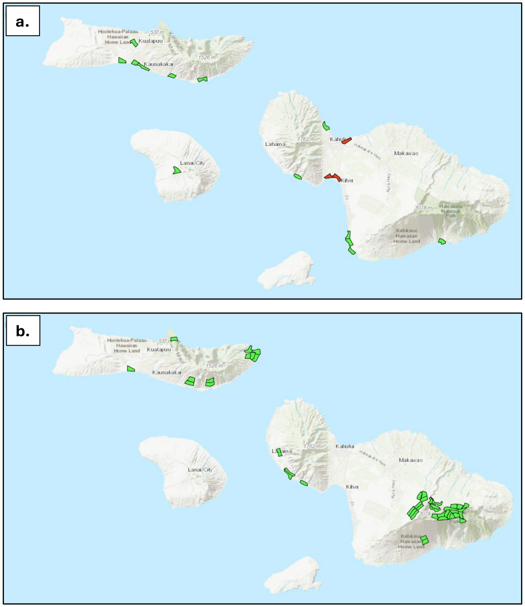

The species
At-risk waterbirds in the MNLCPplan p.42, Ch 6c ii and Table 13
| Hawaiian name | Common name | Scientific name | Status | Habitat | In Maui Nui today? |
|---|---|---|---|---|---|
| ʻAlae keʻokeʻo | Hawaiian coot | Fulica alai | Endangered (State and federal) | Wetland ponds and marshes | Yes |
| ʻAeʻo | Hawaiian stilt | Himantopus mexicanus knudseni | Endangered (State and federal) | Shallow lowland wetlands, mudflats and coastal areas | Yes |
| Nēnē | Hawaiian goose | Branta sandvicensis | Federally threatened; State endangered | Lowland and upland grassland and shrubland | Yes |
| ʻAlae ʻula | Hawaiian moorhen | Gallinula galeata sandvicensis | Endangered (State and federal) | Freshwater wetlands with aquatic plants | No |
| Kōloa maoli | Hawaiian duck | Anas wyvilliana | Endangered (State and federal) | Lowland and upland streams and wetlands | No; kōloa-like ducks here appear to be kōloa-mallard hybrids |
Status and trends
In general, waterbirds have responded well to management.plan p.45, Ch 6c vi Along with Seabirds, they already have better than average persistence with current conservation efforts.plan p.40 Two species are missing. The ʻalae ʻula needs low-salinity freshwater wetlands, which are rare in Maui Nui. All ducks that resemble kōloa maoli appear to be hybrids with feral mallards.plan p.43
Current estimated populations (individuals)plan p.43, Table 14
| Species | Maui | Molokaʻi | Lānaʻi | Kahoʻolawe | Total |
|---|---|---|---|---|---|
| ʻAlae keʻokeʻo (Hawaiian coot) | 320 | 30 | 14 | 0 | 364 |
| ʻAeʻo (Hawaiian stilt) | 499 | 142 | 43 | 0 | 684 |
| Nēnē (Hawaiian goose) | 580 | 30 | 0 | 0 | 610 |
| ʻAlae ʻula (Hawaiian moorhen) | 0 | 0 | 0 | 0 | 0 |
| Kōloa maoli (Hawaiian duck) | 0 | 0 | 0 | 0 | 0 |
Threats
- Wetland loss. Human changes to wetlands have destroyed habitat.plan p.41
- Introduced mammalian predators. Mongoose, cats, rats and domestic dogs.plan p.41
- Botulism. Botulism poisoning is a local threat in some wetlands.plan p.41
- Hybridization. Interbreeding between kōloa maoli and feral mallards is a highly significant threat.plan p.41
- Human-caused deaths. For nēnē, the plan includes reducing human-caused mortality, such as car strikes.plan p.45; App 2 p.A2-35
Emergency actions
None of the waterbirds is facing imminent extinction, so no emergency actions are listed for this group.plan p.43, Ch 6c iii; p.21, Table 2
Recovery strategy
Strategy by species
- ʻAlae keʻokeʻo and ʻaeʻo. Keep habitat suitable by managing water levels and flow, sediment and invasive weeds, and control predators, using predator-proof fencing where it is cost-effective.plan p.41
- Nēnē. Control predators, restore upland areas and increase the population on Molokaʻi.plan p.41
- ʻAlae ʻula. Protect and restore suitable habitat, then reintroduce the species to Molokaʻi.plan p.41
- Kōloa maoli. First develop an effective way to remove the threat of hybridization. Once that works, it will be feasible to reintroduce kōloa maoli to Maui Nui.plan p.41
Goals
The recovery footprint includes very important wetlands (and uplands for nēnē) as primary habitat for the populations needed to meet recovery requirements, plus supporting areas that provide additional habitat.plan p.43, Ch 6c iv
Recovery population targets (individuals)plan p.44, Table 15
| Species | Maui | Molokaʻi | Lānaʻi | Kahoʻolawe | Total |
|---|---|---|---|---|---|
| ʻAlae keʻokeʻo (Hawaiian coot) | X | X | X | 0 | 750 |
| ʻAeʻo (Hawaiian stilt) | X | X | X | 0 | 750 |
| Nēnē (Hawaiian goose) | 2 populations (800) | 200 | 0 | 0 | 1,000 |
| ʻAlae ʻula (Hawaiian moorhen) | 250 | 250 | |||
| Kōloa maoli (Hawaiian duck) | X | 250 | X | 0 | 250 |
"X" means the target can be met on that island as part of the Maui Nui total. The nēnē target on East Maui is two populations, one of 600 birds and one of 200.plan p.43, Table 15 note
Recovery footprint and priority footprint
Waterbirds followed the plan's expert-led pathway. The Waterbird Team and species experts identified the key wetlands needed to provide habitat for all five waterbirds.plan p.44, Ch 6c v A subset of wetlands (and uplands for nēnē) in the footprint makes up the priority footprint, where initial conservation actions should focus.plan pp.43-44 In the plan's maps, priority areas and implementation areas are the same.plan p.45, Figure 8 caption

How the waterbird footprint was delineatedDetails
- Pathway. Waterbirds followed the expert-led pathway: specialists delineated priority areas directly through repeated collaborative review rather than algorithmic footprint generation. The plan uses this pathway for groups with few focal species and strong existing expert knowledge.plan App 1 p.A1-5
- Review format. DOFAW coordinated the taxon expert team. Waterbird prioritization covered five threatened or endangered species through web-map and spreadsheet review sessions.plan App 1 p.A1-5
- Planning process. Expert determination of species at risk, species facing imminent extinction, management needs and emergency action locations, recovery goals, the recovery footprint, the priority footprint and the order of conservation strategies.plan p.41
- Recovery goal types. ʻAlae keʻokeʻo, ʻaeʻo and nēnē have full recovery goals. ʻAlae ʻula and kōloa maoli, which have no current populations here, have interim recovery goals.plan p.42, Table 13; p.19, Table 1
- Viewing. The footprint can be viewed alone or with other groups' footprints in the Adaptive Conservation Planner (Conservation Planner).plan App 1 p.A1-5
Priority conservation actions
The plan's action prioritization used a modified Priority Threat Management (PTM) process. PTM estimates how much each of 27 strategies would raise the chance that each species group persists over 20 years.plan p.84, Ch 6j For ʻalae keʻokeʻo and ʻaeʻo, the most important actions are predator-proof fencing, wetland habitat protection and habitat management. For nēnē, they are restoration, predator control and reducing human-caused deaths.plan p.45
Recommended order of S27 actions for waterbirdsplan pp.45-46, Table 16; values match App 2 p.A2-15, Table 1
| Order | Strategy | What it involves | Persistence on its own (%) |
|---|---|---|---|
| 1 | S10 | New predator-proof fencing (against rodents, mongoose and cats) | 50 |
| 2 | S7 | Invasive vertebrate predator control (rats, cats, dogs, mongoose, barn owls, cattle egrets, rabbits) | 49 |
| 3 | S6 | Wetland habitat management for at-risk species | 38 |
| Medium | S17 | Vertebrate health and rehabilitation | 38 |
| Medium | S14 | Avian disease prevention (including managing avian botulism) | 34 |
| Medium | S16 | Minimizing and modifying infrastructure (less lighting, modified power lines and wind turbines, fewer road kills) | 33 |
| Medium | Added 1 | Reintroduce ʻalae ʻula (Hawaiian moorhen) | not scored |
| Medium | Added 2 | Control hybridization between kōloa and mallards | not scored |
| Medium | Added 3 | Reintroduce kōloa maoli (Hawaiian duck) | not scored |
The three added actions were included after the first analyses.plan p.45, Table 16 caption If all S27 actions are implemented, Waterbirds are expected to have a 58 percentplan p.46, Table 16 caption; p.85, Table 26 chance of persisting through the 20-year timeframe.
The most immediate actions for waterbirds are more predator fencing, control of predators (especially cats, dogs, rats and mongoose) and wetland management.plan p.46
PTM results for waterbirds in more detailDetails
Expected 20-year persistence for waterbirds under selected scenariosplan p.85, Table 26; App 2 p.A2-15, Table 1
| Scenario | Persistence (%) |
|---|---|
| No action | 23 |
| Current actions only | 40 |
| S10 new predator-proof fencing, alone | 50 |
| S22 to S26 (combinations of predator control, ungulate control and habitat management) | 51 to 55 |
| S27 bird-focused combination, adjusted for feasibility | 58 |
- Waterbirds, like Seabirds and the Hawaiian hoary bat, do not depend on research or unproven future technologies to reach 50 percent persistence.plan p.86, Ch 6j
- The PTM waterbird group in Appendix 2 lists kōloa maoli, ʻalae keʻokeʻo, nēnē and ʻaeʻo.plan App 2 p.A2-19, Table 1
- What S10 includes for waterbirds: build and maintain two new predator-proof fences per year for 10 years (20 fences in all)plan App 2 p.A2-33, and new cat-proof fences where cats are the main predator or full predator-proof fences are hard to build.plan App 2 p.A2-33, Table 2
- What S6 includes: removing invasive plants from wetlands; removing built-up sediment; planting forested bioshields around critical waterbird habitat; protecting future waterbird habitat from development and climate change through planning and zoning; pumping, diking and wells to manage water levels and salinity and reduce botulism outbreaks; and supporting restoration of loʻi with loʻi farmers.plan App 2 pp.A2-30 to A2-31, Table 2
- Waterbird parts of other strategies: controlling cattle egret roosts in wetlands (S7); a network to find and remove bird carcasses and report avian botulism outbreaks (S14); power line diverters (S16); and speed bumps within Haleakalā and changes to roadside management to reduce nēnē car strikes (S16).plan App 2 pp.A2-31, A2-34, A2-35, Table 2
Monitoring and research needs
- Disease surveillance. Continue surveillance, planning and response for avian influenza and other diseases.plan p.46
- Standard monitoring. Standardize monitoring of waterbird populations at managed sites.plan p.46
- Hybridization research. Develop methods to prevent kōloa maoli from hybridizing with feral mallards. Reintroduction cannot happen until these methods reduce hybridization to an acceptable level.plan pp.45-46
- Reintroduction sites. Create and maintain good habitat as potential reintroduction sites for ʻalae ʻula.plan p.45
Island by island
- Maui. Home to most of today's coots (320), stilts (499) and nēnē (580).plan p.43, Table 14 The nēnē target here is two populations totaling 800 birds (600 and 200).plan p.44, Table 15
- Molokaʻi. Has 30 coots, 142 stilts and 30 nēnē today.plan p.43, Table 14 The plan aims to increase nēnē here to 200 and to reintroduce ʻalae ʻula (250 birds).plan p.41; p.44, Table 15 The kōloa maoli target also lists 250 birds for Molokaʻi.plan p.44, Table 15
- Lānaʻi. Has 14 coots and 43 stilts today, and can contribute to the Maui Nui-wide coot, stilt and kōloa maoli targets.plan pp.43-44, Tables 14-15
- Kahoʻolawe. No waterbirds today and no waterbird targets.plan pp.43-44, Tables 14-15